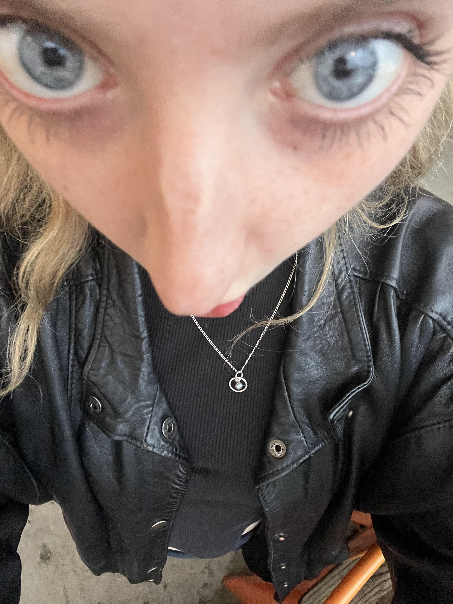

Introduction
Hi, my name is Ella Flaherty and I am 21 years old. Nice to meet you!
Education
I have completed the introductory HTML Css class and I have a back-round in graphic design.
Work Experience
I currently work in the restaurant industry and I am looking to change careers pretty soon. I enjoy developing websites right now.
Skills
I am a passionate and driven web developer currently pursuing my degree at San Diego Mesa College. With a strong foundation in web development technologies, including HTML, CSS, & JavaScript . I am constantly striving to expand my skillset and stay up-to-date with the latest trends and best practices. My experience includes developing responsive and user-friendly websites for clients across various industries. In addition to technical skills, I am a strong communicator and team player, which allows me to work effectively in a collaborative environment. I understand the importance of meeting deadlines and delivering high-quality work, which is why I approach each project with a meticulous attention to detail and a commitment to excellence. As a lifelong learner, I am always looking for new opportunities to improve my skills and knowledge. I am eager to apply my skills and contribute to the success of a dynamic and innovative organization in the web development industry. Overall, my goal is to leverage my skills, experience, and passion for web development to create engaging and intuitive websites that enhance the user experience and achieve business goals.
Interests and Hobbies
- Playing guitar
- Hiking
- Cooking
- Positivity!
Contact Me
ellarflah@gmail.com